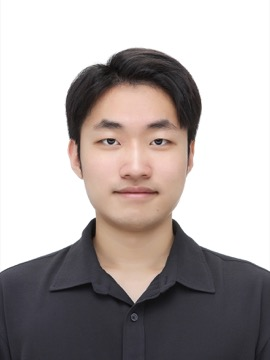

M.S. & Ph.D., Seoul National University
Networked Computing (NXC) Lab. Advised by Prof. Kyunghan Lee.
Now looking for internship opportunities in edge AI systems.
Seoul National University - Networked Computing Lab
I am an M.S. and Ph.D. student in Electrical and Computer Engineering at Seoul National University, advised by Prof. Kyunghan Lee in the Networked Computing (NXC) Lab. My research builds efficient edge AI systems for mobile-server collaboration, real-time visual processing, and collaborative inference.

ACM MobiSys, Cambridge, UK
ACM MobiSys, Cambridge, UK
ACM MobiSys, Tokyo, Japan
ACM MobiSys Poster Session, Cambridge, UK
ACM MobiSys Poster Session, Cambridge, UK
Networked Computing (NXC) Lab. Advised by Prof. Kyunghan Lee.
Learning, Incentives, and Optimization for Networked Systems (LIONS) Research Group. Advised by Prof. Carlee Joe-Wong.
Department of Electrical and Computer Engineering.
Computer Science & Engineering, first author.
Communication & Networks, co-author.
A3 Foresight Program 2024, Beijing, China.
The 22nd ACM International Conference on Mobile Systems, Applications, and Services.
Seoul National University, Jun 2026 - Present.
Industrial Applications of Electrical and Electronic Technologies, Fall 2024.
Introduction to Random Variables and Random Processes, Spring 2024.
Languages: C/C++, AArch64 ASM, CUDA, Python
Tools: LaTeX